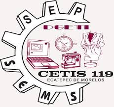

Cuando hablamos de trabajo colaborativo, debemos tener en cuenta que hay que establecer una buena comunicación abierta entre las personas que participan, determinar las acciones para el desarrollo de las labores, realizar una toma de decisiones en conjunto y tener metas en común.

Fomentar la integración, comunicación efectiva y el trabajo colaborativo entre los integrantes de los grupos de estudio, desarrollando habilidades del MCCEMS como el pensamiento crítico, la toma de decisiones y el respeto a la diversidad de ideas en una comunicación asertiva y de manera sana.
Consulta el siguiente material didáctico sobre los temas de Trabajo en equipo y algunas posibles consecuencias psicoemocionales en su práctica como son los Sentimientos encontrados.